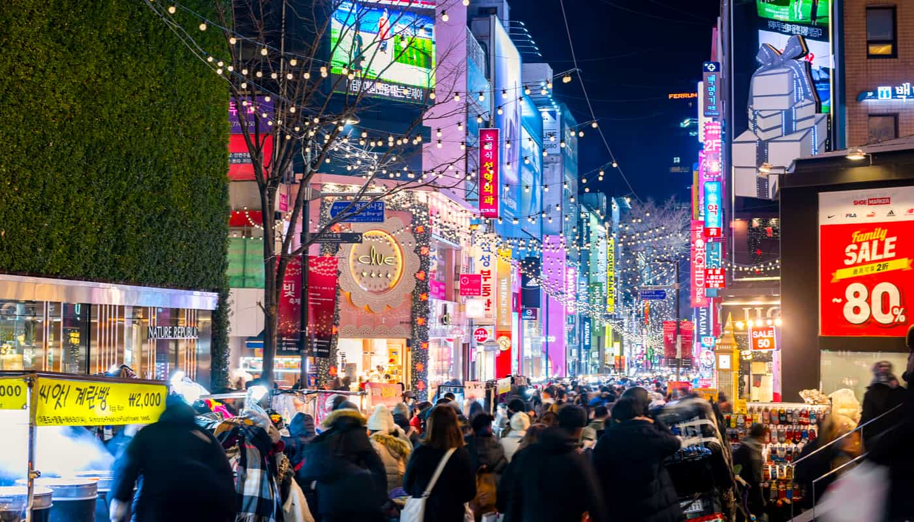

Locations in Seoul
Gyeongbokgung Palace
Gyeongbokgung Palace was the first and largest of the royal palaces built during the Joseon Dynasty.
Built in 1395, Gyeongbokgung Palace was located at the heart of the newly appointed capital of Seoul
(then known as Hanyang) and represented the sovereignty of the Joseon Dynasty. The largest of the Five
Grand Palaces (the others being Gyeonghuigung Palace, Deoksugung Palace, Changgyeonggung Palace,
Changdeokgung Palace), Gyeongbokgung served as the main palace of the Joseon Dynasty.
Adult Fee: KRW 3,000
Child Fee: KRW 1,500
Myeongdong
Myeongdong is Seoul’s shopping mecca and is a must-see for tourists, but it is not just a shopping
destination; Myeongdong is also a hub of commerce, banking and culture with a daytime population of 1.5-2 million.
For shoppers there is a mixture of street stalls and retail outlets selling everything from high fashion to casual
attire, as well as many Korean cosmetics stores offering high-quality products at competitive prices.
Myeongdong is jammed with massive department stores, fashion boutiques, and cosmetics shops.
The Myeongdong area is also a great destination for foodies. Prepare your tastebuds for its popular street
food vendors and delicious restaurants & cafes.
Bukhansan National Park
Bukhansan National Park is the only national park in the Seoul metropolitan area. The park’s many granite peaks and gorges are punctuated by crystal clear streams, creating a perfect harmony between the mountains and water. Rich in biodiversity, Bukhansan is home to more than 1,300 species of plants and animals and boasts a wealth of historical and cultural heritage sites as well as over 100 Buddhist temples and hermitages. With its many ridges and valleys, Bukhansan National Park is very popular with hikers, offering trails suited to every level of experience, from gentle slopes to steep rugged tracks while the ever-changing scenery each season makes every visit unique.

